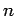

Inhalt Index DeskTop Bronstein

 Funktionentheorie Potenzreihenentwicklung analytischer Funktionen Konvergenz von Reihen mit komplexen Gliedern
Funktionentheorie Potenzreihenentwicklung analytischer Funktionen Konvergenz von Reihen mit komplexen Gliedern


Eine unendliche Folge komplexer Zahlen hat den Grenzwert , wenn, beginnend bei einem gewissen , die Ungleichung für eine beliebig kleine positive Zahl  erfüllt werden kann. D.h. von einem gewissen n an liegen alle Punkte, die die Zahlen darstellen, innerhalb eines Kreises mit dem Radius
erfüllt werden kann. D.h. von einem gewissen n an liegen alle Punkte, die die Zahlen darstellen, innerhalb eines Kreises mit dem Radius  und dem Mittelpunkt in
und dem Mittelpunkt in  .
.
| Beispiel |
|
Der Grenzwert gilt für beliebiges |